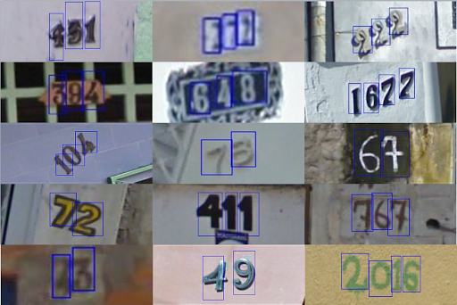
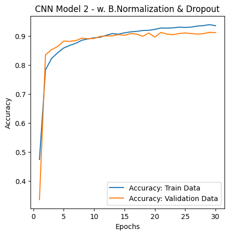

Overview
Developed a classification Convolutional Neural Network (CNN) to detect and classify images of numbers. Utilized 600,000 real-world images collected by the Street View House Number (SVHN) dataset.

Model Architecture
Utilized Python and TensorFlow to build a CNN model that included Batch Normalization and Dropout layers to improve accuracy while preventing overfitting.

Results
Model achieved 91% accuracy on the test dataset.
Shown here is the confusion matrix to analyze which digits were most commonly misclassified.